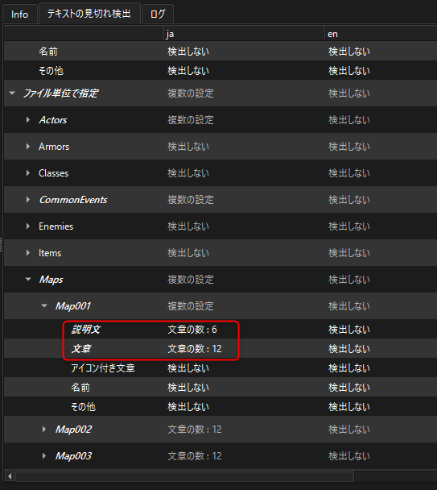

各画面の説明(パッキングモード)¶
パッキングモード¶
問題の確認を行う際にCSVファイルを検索するパスです。
問題を確認した際にヒットしたファイルです。問題がある場合は警告またはエラーのアイコンが表示されます。(エラー優先)
翻訳文の内容を表示します。警告のある箇所は背景を黄色く、エラーのある箇所は赤く表示します。
翻訳ファイルに問題があるかを確認します。1.で指定したフォルダ以下のCSVを検索します。
(VX Aceのみ)CSVファイルをrvdata2にパッキングします。
タブによって3を切り替えます。
注釈
VX Aceの「暗号化アーカイブを作成する」を使用してゲームを配布する場合、パッキングは必ず行ってください。
CSVファイルを検索するパス¶
CSVファイルを検索するパスは 翻訳ファイル書き出しモードで最後にファイルを書き出したフォルダ になります。
翻訳ファイルを別フォルダに移して作業した場合は、適宜指定し直してください。
問題の確認について¶
翻訳文に致命的なミスが無いかをチェックします。以下の内容を警告またはエラーとして検出します。
翻訳ファイル作成モードで指定した言語と、CSV内の言語列に差異がある
言語ごとの翻訳文に空の箇所があるか
翻訳文に原文の制御文字が正しく含まれているか
[]で閉じる必要がある制御文字が正しく閉じられているか
マップ系の改行文字が\r\nである
注釈
警告やエラーはあくまでヒントになります。無視してもパッキングに影響はありませんが、ゲーム側で意図しない表示になる可能性があります。
パッキングの書き出し先について (VX Aceのみ)¶
パッキングしたファイルは常にゲームプロジェクトの Data/Translate に書き出されます。
この出力先は変更できません。
見切れ検出¶
テキストの表示がウィンドウ内に収まっているかを判定する機能です。
プロジェクトを開いた後、パッキングモードを選択して下さい。 パッキングモードのタブに「テキストの見切れ検出」があります。
見切れ検出には2種類の方法があります。どちらも検出する長さを指定します。
(検出長 < 文章長) で警告となります。
文章数¶
文字数を指定し、その文字数を超えた場合に警告を出します。
画像の文章の場合、10を指定すると警告が出ます。
文章の表示長¶
文章の横幅における最大ピクセル数を指定し、その長さを超えた場合に警告を出します。 フォントは各種言語で指定したフォントに準拠します。
画像の文章の場合、179を指定すると警告が出ます。
検出対象¶
検出する文章のカテゴリが7種類あります。
バトルメッセージ¶
戦闘中に表示されるメッセージ（〇〇の攻撃！）です。
battleName¶
戦闘中に表示されるキャラ名などです。英語になっているのは多分ミスです。
説明文¶
アイテムや武器防具の説明文です。
文章¶
会話テキストが該当します。
アイコン付き文章¶
アイコンが付いている場合の文章です。検出する長さには、文章が表示される右端から左端までの長さを計測して設定して下さい。
名前¶
メニューなどに表示されるキャラ名です。
その他¶
分類出来なかった内容がその他として格納されます。
設定方法¶
「ファイル単位で指定」または「一括で指定」で指定可能です。
ファイル単位で指定¶
翻訳CSV毎に設定を行います。 ファイルは「翻訳ファイルが有るフォルダ」で指定したフォルダ内のファイルが表示されます。
一括で指定¶
検出対象毎に検出設定を適用します。同じ検出対象を持つ全てのファイルに影響します。
その他の設定¶
ツクールの制御文字を使用している文章の場合、制御文字を考慮して長さの検出を行います。 しかし、プラグインによっては独自の制御文字を使用しているものもあるため、それらのプラグインを使用している場合ここの設定を変更します。
枠で括った辺りをクリックすると、制御文字入力UIが表示されます。
↓
"Enter a tag and press Enter"に制御文字を入力して、+ボタンを押して下さい。 "" は不要です。また、"[]"が含まれる場合は"〇〇["と入力して下さい。 例えばset[]という制御文字の場合は"set["と入力します。
削除する場合はxボタンを押して下さい。テキストの編集も可能です。